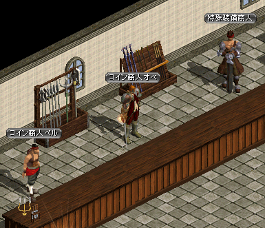

2017年12月27日アップデート

2017年12月27日 アップデートの変更内容一覧
メインクエストシーズン2実装
新キャラクター「アルケミスト」追加
ビーストテイマー一部仕様変更
1〜3次転生一部機能変更
新装備アイテム「エターナルアルティメットユニーク」追加
祭壇システム追加
NPCクエストアイコン変更
ギルドデイリークエスト変更
促成サポート装備追加
新パーティーボスマップ追加
不具合修正
不具合
メインクエストシーズン2実装
メインクエスト1を完了したキャラクターが古都ブルンネンシュティグへ移動すると、自動的にメインクエストシーズン2 CHAPTER 1が開始されます。
クエストはChapter 4 - Part 11まであり、秘密ダンジョンが合計13回あります。
すべて完了すると繰り返しクエストとなり、以下の3種類から報酬を選択することができます。
| NPC | 報酬内容 |
|---|---|
| ミント | <基本報酬> 1) ペブル/ソーラー/プリズムコクーンのうちランダムで1個 2) 力/知識/健康/サポートの水光石のうちランダムで1種類10個 3) （低確率で）クリーチャーの力の指輪 |
| アミール | <基本報酬> ノーマル/レア/スペシャル等級の白紙図案書のうちランダムで1個 ※魔力注入システムが実装されるまでは、祈りカケラBOX[下級]/[中級]/[上級]のうちランダムで1個 <追加報酬> （低確率で）タティリスの心臓/タティリスの根源のうちランダムで1個 |
| フニン | <基本報酬> スキル/ステータスポイントどちらか（20回まで） スキル/ステータスポイントの獲得に失敗した場合は、結晶石1個 <追加報酬> （低確率で）ストレンジの小さな欠片（祈りのカケラ10個）/ストレンジの欠片（祈りのカケラ15個）/ストレンジの凝縮剤（祈りのカケラ20個）のうちランダムで1個 |
| クリーチャーの力の指輪 | |
|---|---|
| <基本情報> 装備数制限(1/1) 着用時に活性化されたクリーチャーの経験値 1 獲得 攻撃速度 +5％ 知恵 +50 <要求能力値> レベル 1 <説明> ネフォンクリーチャーイベントを通じて獲得することができる指輪。ネフォンクリーチャーが持つ能力の源泉を刺激して成長を促進してくれる貴重な指輪である。 ※ モンスター討伐時、アクティブなクリーチャーの経験値を1ずつ上げてくれます。 |
※タティリスの心臓…魔力注入システムのスペシャル等級の図案書の製作材料
※タティリスの根源…魔力注入システムのスペシャル等級の図案書‘循環’の製作材料
※スキルとステータスポイントの報酬は、合わせて20回まで。
Lv1〜20の段階ごとに確率が存在し、失敗の場合は20回のカウントに入りません。
累積回数に応じて成功確率は低くなります。
（スキルポイントをLv15まで上げた後、ステータスLv1を受ける場合は累積回数16回に該当する確率になります。）
善悪値にマウスオーバーした時に、補償回数とスキル/ステータスポイントを確認することができます。
| Lv | スキルポイント | ステータス |
|---|---|---|
| 1 | 1000 | 50 |
| 2 | 1000 | 50 |
| 3 | 1000 | 50 |
| 4 | 1000 | 50 |
| 5 | 5000 | 250 |
| 6 | 1000 | 50 |
| 7 | 1000 | 50 |
| 8 | 1000 | 50 |
| 9 | 1000 | 50 |
| 10 | 5000 | 250 |
| 11 | 1000 | 50 |
| 12 | 1000 | 50 |
| 13 | 1000 | 50 |
| 14 | 1000 | 50 |
| 15 | 5000 | 250 |
| 16 | 1000 | 50 |
| 17 | 1000 | 50 |
| 18 | 1000 | 50 |
| 19 | 1000 | 50 |
| 20 | 5000 | 250 |
新キャラクター「アルケミスト」追加
 |
マスケッティアの裏職アルケミストは、メイン武器「錬金石」と補助武器「触媒石」を使用し、火属性攻撃・支援・ホムンクルス召喚などのスキルを使う知識職です。 レベルアップ時には、ステータスポイント5ポイントを獲得します。 マスケッティアからアルケミストへ変身時、運以外のすべてのステータスが反転します。 スキルマスタークエストは、古都ブルンネンシュティグのメイリン（111.153）にて受諾することができます。 |


| 錬金術師セットアイテム | ||
|---|---|---|
| Lv | セットアイテム名 | セットアイテムボスモンスター |
| Lv55 | くず鉄の塊 | 旧レッドアイ研究所 Ｂ３ 研究所長 |
| Lv160 | 錬金術の美学 | シーフギルドの倉庫[Ｃ] Ｂ３ 闇の追跡者 |
| Lv285 | カーディペのDM | トラン森東部 東のエント |
| Lv350 | ジェムストーンリファレンス | トラン森西部 魔獣の王 |
| Lv410 | 研究者カルテ | スウェブタワー Ｂ６ 塔の野獣 |
| Lv490 | 身元不明 | スパインホール地下 Ｂ２ ブルーモンスター |
| Lv560 | 月光を含んだ原石 | 名も無き遺跡 Ｂ２ ダークアーチャー |
| Lv650 | 人間の尊厳 | モリネルタワー 地上６階 モリネル守護神 |
  |
錬金術師プレミアムコスチューム ペスティブセイジ[P] |
ビーストテイマー一部仕様変更
スキル「治療」の仕様変更
ペットの現在のHP％に応じた回復量になりました。
| スキルLv | 1 | 2 | 3 | 4 | 5 | 6 | 7 | 8 | 9 | 10 | 20 | 30 | 40 | 50 |
|---|---|---|---|---|---|---|---|---|---|---|---|---|---|---|
| 消費CP | 50 | 54 | 58 | 62 | 66 | 70 | 74 | 78 | 82 | 86 | 122 | 158 | 194 | 230 |
| HP回復 HP*n（％） |
19 | 23 | 27 | 31 | 35 | 39 | 43 | 47 | 51 | 55 | 95 | 135 | 175 | 215 |
エリートペット4種追加
エリートペットは真心の民に覚醒しないとテイムできません。
| エリートペット | 特徴 | |
|---|---|---|
 |
エリート砂漠戦士 （覚醒砂漠戦士Zin） Lv500 デフヒルズ古代遺跡 B2 3体湧き |
分類 : 人間型 タイプ : 物理 特技攻撃 : ファイナルチャージング チャージングスキルを使用して高速で走って行く、速い攻撃速度が特徴。 |
 |
エリート悪魔 （覚醒悪魔Zin） Lv600 ゴールド・スワンプ洞窟 Ｂ１ 1体湧き |
分類 : 悪魔型 タイプ : 物理 基本攻撃 : スタンアタック 瞬間5連打スキルを使用する、高い体力と防御力が特徴。 |
 |
エリート魔導師 （覚醒魔術師Zin） Lv500 モリネルタワー 地上６階 3体湧き |
分類 : 悪魔型 タイプ : 魔法 基本攻撃 : ファイアーボルト 特技攻撃 : ファイアーボール ファイアボールを介して強力なターゲットスキルを駆使するペット。 |
 |
精鋭サキュバス （覚醒魔サキュバスZin） Lv600 ガルカス悪魔軍集結地 Ｂ１ 1体湧き |
分類 : 悪魔型 タイプ : 魔法 基本攻撃 : アイスボルト 特技攻撃 : ウォーターキャノン 速い攻撃速度で水属性の遠距離魔法を使用。 |
ペット召喚クールタイム変更
ペットを飼育記録書にした後、再召喚するまでのクールタイムが10分からで2分に変更されました。
成長の秘薬/特級成長の秘薬の性能変更
転生ペットにのみ使用可能でしたが、すべてのペットに使用できるように変更されました。
| 成長の秘薬 | 特級成長の秘薬 |
|---|---|
| ペットの飼育記録書に使用する事で、ペットのレベルを使用者と同じレベルまで上昇させる。 ※ 最大600レベルまで。 |
ペットの飼育記録書に使用する事で、ペットのレベルを使用者と同じレベルまで上昇させる。 ※ 最大900レベルまで。 |
ペットの等級分類
ペットの調教可能な最低〜最大Lvに応じて等級分けされます。
既存のペットは等級1に分類され、最大Lv1000まで育成することができます。
また、テイムする際にモンスターをレベルダウンする場合も、最低Lvより下げることはできません。
育成可能なペットの最大Lvは、ペット情報ウィンドウのLv欄にて確認することができます。
| 等級 | Lv | ペット種類 |
|---|---|---|
| 1 | 1〜1000 | 既存のすべてのペット |
| 2 | 500〜1500 | 今回実装のエリートペット4種 今後、追加されるモンスターや新エリートペット |
| 3 | 1000〜2000 | 未実装 |
| 4 | ？ | 未実装 |
1〜3次転生一部機能変更
・1〜3次転生時に初期化される最低レベルが300に変更されました。
アップデート以前に転生している場合は、レベルは維持されます。
例? Lv600のキャラクターが1次転生 ⇒ Lv300
例? Lv700のキャラクターが2次転生 ⇒ Lv563
例? Lv800のキャラクターが3次転生 ⇒ Lv712
・1〜3次転生時、装備レベル要求値が600以下のアイテムを装備できるように変更されました。
各種装備バッジ効果は重複せず、従来通りキャラクターのレベルを基準に機能します。
・1〜3次転生時、Lv600まで経験値ブースト効果が追加されました。
.gif) |
ブースト効果はモンスター討伐時のみの効果となります。 クエストやレイドボス討伐の経験値には効果がありません。 各種ポータル・スフィア系、経験値ブーストバッジ、実の効果は重複します。 |
.gif) |
称号欄の「転生者」を右クリックすると、経験値ブースト効果のon/offを切り替えることができます。 |
| 転生 | 経験値ブースト |
|---|---|
| 1次 | 10倍 |
| 2次 | 15倍 |
| 3次 | 20倍 |
新装備アイテム「エターナルアルティメットユニーク」追加
エターナルアルティメットユニーク装備は、既存のDXユニークよりもさらに一段階上位等級のアイテムです。
要求Lvは775。
鏡の魔法書や異次元ボックスは使用不可。錬成・解放は可能。
Lv775以上のモンスターからドロップします。
アイテムの詳細は ⇒ 韓国 2017.12.6アップデート Ultユニーク装備
祭壇システム追加
魔力注入システムで必要な材料を獲得するための祭壇が追加されました。
魔力注入システムの詳細は ⇒ 韓国 2017.10.18アップデート 魔力注入システム
NPCクエストアイコン変更
.gif) |
NPCの頭上とミニマップに表示されるクエストアイコンが変更されました。 受諾可能なクエストは「！」、受諾中のクエストは「？」で表示され、 「！/？」の下にクエストの種類が表記されます。 |

| クエスト種類 | 表記 |
|---|---|
| メインクエスト | MAIN |
| 一般クエスト | NORMAL |
| ギルドクエスト | GUILD |
| 称号クエスト | TITLE |
| スキルマスタークエスト | SKILL |
| デイリークエスト | DAILY |
ギルドデイリークエスト変更
・ギルド作成/加入後、1日以上経過しないとギルドデイリークエストが受託できないように変更されました。
・ギルドデイリークエストの受諾可能Lvが、Lv50以上に変更されました。
アップデート以前に受諾していた場合は、そのまま進行・完了することができます。
クエストの詳細は ⇒ ギルドデイリークエスト
促成サポート装備追加
冒険家協会ブルンネンシュティグ本部のコイン商人オベにて、冒険団コイン10枚で促成サポート装備と交換することができます。

.gif) |
交換できる促成サポート装備は、レベル・ステータスの制限はありませんが、錬成・異次元・鏡の魔法書・取引・銀行保管・NPC売却・エンチャント・破壊などはすべて不可。 また、既存のアイテムより少し低い性能になっています。 |
 |
促成サポート装備をコイン商人オベに売却すると、冒険団コイン10枚を返却してもらうことができます。 |
.gif)

新パーティーボスマップ追加
パーティーボスマップ3個と接続する街1個が追加されました。
タトバ山東部地域とデフヒルズ西部地域の祭壇は、今後実装予定の魔力注入システムに関連するものです。
詳細は ⇒ 韓国 2017.10.18アップデート 魔力注入システム パーティーボスモンスター

? タトバ山東部地域 Lv650〜680 接続マップ：タトバ山
 |
祭壇（80.24） |
 パーティーボス：ケンタウロス（Lv810）Zin
パーティーボス：ケンタウロス（Lv810）Zin? デフヒルズ西部地域 Lv650〜680 接続マップ：デフヒルズ
 |
祭壇（100.73） |
 パーティーボス：イーグルヘッド（Lv760）Zin
パーティーボス：イーグルヘッド（Lv760）Zin? 衛星都市ロングテール

? ロングテール付近の狩場 Lv270〜330 接続マップ：衛星都市ロングテール

 パーティーボス：金剛石ゴーレム（Lv860）Zin
パーティーボス：金剛石ゴーレム（Lv860）Zin不具合修正
・「アトラクションドロー」を使うとスキルのモーションが止まらない不具合修正。
・ネフォンクリーチャー「見習い魔女」のサブスキル1「あまいキャンディ」の効果が対戦相手のクリーチャーとなっている不具合修正。
・アーチャーの超越スキル「テイルチェイサー改」の効果が適用されていなかった不具合修正。
・メインクエスト1 3-6-3「RED STONEの完全体作り」をミラーダンジョンで進行すると、獲得できるクエストアイテムの数が少なくなっていた不具合修正。
・獣人で「黄色のメリックが残した遺物 1」から始まる覚醒スキルクエストを受諾する際、NPC「シュトラウズ」の頭上のクエストマークがなかった不具合修正。
・ギルド加入から3日以内でもギルド募集リストから新規加入が可能となっていた不具合修正。
・『運』のステータスが32,800を超えると、「マイナス」になる不具合修正。
・ビーストテイマーのペットの経験値が「2,147,483,647」以上の場合に、飼育記録書に保管すると経験値が低下する不具合の修正と仕様変更。
⇒飼育記録書にした際に経験値の下2桁を切り捨てて保管し、飼育記録書から召喚する際に2桁追加されます。
例） 経験値「1,147,483,647」→飼育記録書に保管「11,474,836」→召喚「1,147,483,600」
・一部アイテムの基本情報の表記が誤っていた不具合修正。
不具合
・ギルド加入時に申請者と承認者が異なるマップにいる状況で加入承認をすると、「サーバー情報と一致しません」と表示される場合があります。
・アルケミストで試練のダンジョンを一人で挑戦した時、NPC「ガイル・スタイン」へ話しかけて、「1)心配する事はなにもありません。」を選択しても進行できません。
・メインクエスト2の秘密ダンジョン「放棄された洞窟」にて、「死亡時に街へ戻る操作」や「ポータル・スフィアー等で記憶した場所や街へ戻る操作」を行うと、モンスターが出現しないフィールドへ転送され、次のフィールドへ転送されない場合があります。
⇒仕様
・メインクエスト2 「[Chapter 2] 8-6 ゲート封印作業」と「[Chapter 4] 3-2 返信ナシ」を受けたパーティがいる状態では、秘密ダンジョン内のNPC「ミント」に話す順番によって、進行がどちらかの進行となります。
・「持続型スキルのエフェクト非表示」オプションをONにすると、闘士の覚醒スキル「三位一体」の効果発動中のアイコンが消えてしまいます。
・マスケッティアの超越スキル「アトラクションドロー改」で射程距離は伸びていますが、ダメージ範囲が伸びていません。
・サマナーの召喚獣スキル「バブルガムエクスプロージョン」が正常に発動しません。
・メインクエスト2のボスモンスターの攻撃スキルに効果音がありません。
・マスケッティア専用装備「バヨネットガン[Nx]」を再錬成できません。
・「風の羽」「ゲートグローブ」を使用してマップ「ロングテール付近の狩場」に移動することができません。
・ホムンクルスがメインクエストのボスモンスターを攻撃した際、与えたダメージの表記が消えてしまいます。
・「金色の再構成魔法書」でオプション「自動リロード」を再構成できます。
・マップ移動すると「唐辛子を食べさせる」を使用したペットのHPが減少します。
・アルケミストのスキル「メディカルリキッド」が補助スキルスロットに入れると表示上、非活性化された状態となります。
・「クリーチャーの力の指輪」の効果について等級の最大経験値直前で経験値を獲得すると「0」に戻ります。
・冒険家協会のNPC「セリー」からアルケミストで「黄金のチケット」を交換することができません。
・最大HPが特定の数値になると、そのキャラクターが死亡したグラフィックになります。
・プリンセスのスキル「武器変身」を使用すると、変身した武器に「魔力注入」が付与されています
・武闘家のスキル「運気」が敵からダメージを受けると、必要CP分のCPを消費します。